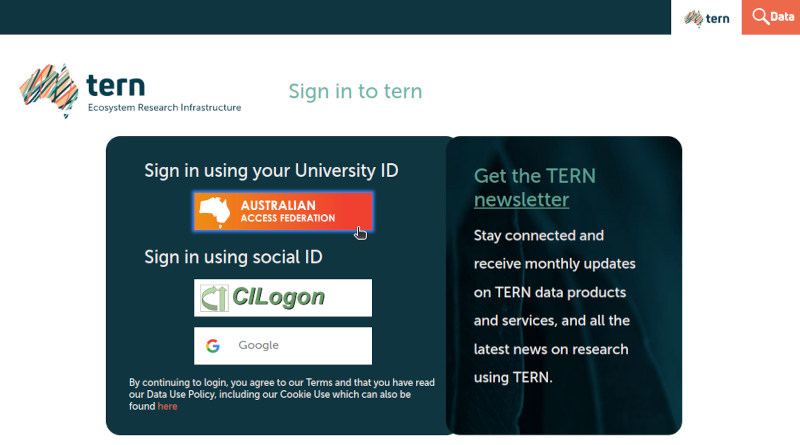
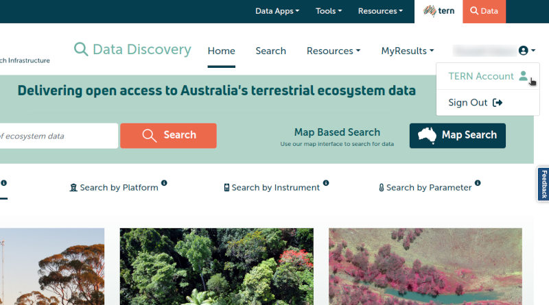
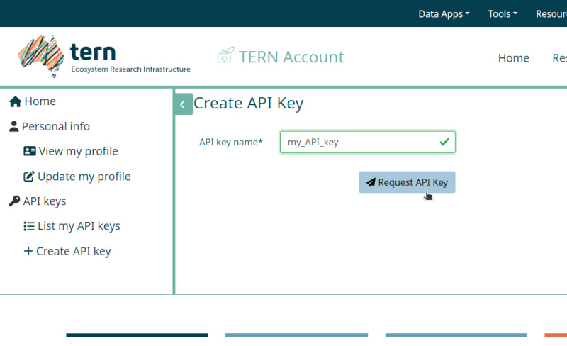
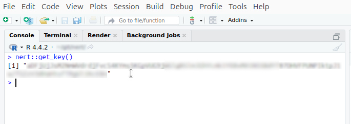

The TERN Soil Moisture Integration and Prediction System (SMIPS)
generates useful measurements of soil moisture at 1km resolution across
all of Australia. TERN provides this soil moisture information as
packaged daily datasets via their TERN Data
Portal, in cloud-optimised GeoTIFF (COG) format. The {nert} package
provides ease of access to these SMIPS datasets for use and inclusion in
R data analytics workflows. This can be obtained by registering at https://portal.tern.org.au, or by more simply using
nert::get_key() in your R session. This document introduces
you to the {nert} package, including setup and how to use the package to
download SMIPS data.
Acquiring Your TERN API Key
An API key is required to access TERN datasets (including SMIPS)
through their online data portal. The {nert} package streamlines the
data process, but still requires authorisation using an API key.
However, it is straightforward to sign up to the TERN Data Portal and
acquire an API key that you can use, and by setting it in your R
environment (via .Renviron) you can provide the {nert}
package with that credential to allow convenient access.
The following steps detail the process for signing in to your TERN account, generating an API key, and storing it in your R environment.
- Either directly navigate to the TERN Data Discovery Portal (https://portal.tern.org.au/) in a web browser OR use
nert::get_key()to launch a web browser at the TERN website and click the “Sign In” button that appears in the top-right of the browser window.

-
Click the Australian Access Federation button to sign in to the TERN Data Portal via your University ID (or alternatively, sign in via CILogon or your Google identity).

-
Once signed in, click on the menu in the top-right with your name and click the “TERN Account” entry to open your account profile.

-
On your account profile screen, navigate to the menu on the left-hand side, and click the “Create API key” entry.

-
On this screen you can create your API key for accessing the TERN Data Portal. Give your key whatever name you like (e.g., below I have called the key “my_API_key” for demonstration purposes), and then click the “Request API Key” button.

-
Your API key is now generated and appears as the string of text inside the text box on the page, together with the key’s creation and expiration dates. Copy the API key to your clipboard, be sure not to close this browser window until after you have successfully stored the key locally somewhere as you won’t see it again.

Saving Your API Key Locally
Using Your .Renviron File
There are a few options for saving your key locally. The most
straightforward way is to save it directly into your
.Renviron file. The most secure way is to store it in your
system’s keychain using the {keyring} package.
Following, I will demonstrate how to save your API key in your
.Renviron file and also, optionally, your operating
system’s credentials store for more security.
- Open your
.Renvironfile. An easy way to open the right file is to use the {usethis} package in your R session, e.g.,usethis::edit_r_environ(). Add a new line to the file to store your API key in the variableTERN_API_KEY, ensuring to use that name as that is what {nert} will automatically look for:
{width=80%}-
Save your
.Renvironfile, and restart your R session so that the change is applied. You can then test that the {nert} package is reading your API key properly by enteringnert::get_key()at the R command console. If the API key was successfully read by {nert}, then you should see your API key appear verbatim as output.
Finally, you can quickly test that the data download from the TERN portal is working as intended by downloading a test data raster. The below code downloads the SMIPS “totalbucket” soil moisture data raster for January 1st, 2024, and uses the {terra} package’s
terra::extract()function to get a point value for the soil moisture measurement at the Adelaide CBD (at approximately -34.9285 decimal degrees latitude, 138.6007 longitude):
library(nert)
library(terra)
#> terra 1.8.21
#>
#> Attaching package: 'terra'
#> The following object is masked from 'package:knitr':
#>
#> spin
r <- read_smips(day = "2024-01-01")
extract(r, xy = TRUE, data.frame(lon = 138.6007, lat = -34.9285))
#> ID smips_totalbucket_mm_20240101 x y
#> 1 1 46.07692 138.6037 -34.93254At this stage your {nert} package is now working, and you can use it to easily download SMIPS datasets from the TERN Data Portal.
Using the {keyring} Package for Secure Storage
If you prefer a more secure method, you can use the {keyring} package to store your API key in your system’s credential store. If you don’t have the {keyring} package installed, you can install it with:
install.packages("keyring")Once it’s installed, you can store your API key with:
library(keyring)
keyring_create("nert")
# add the key to your OS's credential store
key_set("NERT_API_KEY", keyring = "nert")
# verify that the key was stored properly
key_get("NERT_API_KEY", keyring = "nert")Where NERT_API_KEY is the name of the key you want to
store in the keyring. You will enter the actual key value you copied
from the TERN website when {keyring} prompts you to do so.
library(nert)
library(keyring)
r <- read_smips(
day = "2024-01-01",
api_key = key_get("NERT_API_KEY", keyring = "nert")
)Note that here we specified a value for the API key.
Using the example from above, you can get the SMIPS data for all of Australia on Jan 1, 2024 like so:
library(nert)
r <- read_smips(day = "2024-01-01")Note that {nert} re-exports tidyterra::autoplot for ease
of visulalising the TERN data.
autoplot(r)
#> <SpatRaster> resampled to 501270 cells.A plot of SMIPS data for all of Australia on 2024-01-01.
Repeating an example from above where we tested if the API key works,
if you wish to fetch only data for a single point or points, you can
specify them like this using the data object, r, from
above, which is much quicker than fetching the entire dataset:
library(terra)
extract(r, xy = TRUE, data.frame(lon = 138.6007, lat = -34.9285))
#> ID smips_totalbucket_mm_20240101 x y
#> 1 1 46.07692 138.6037 -34.93254That’s it, you’re all set!